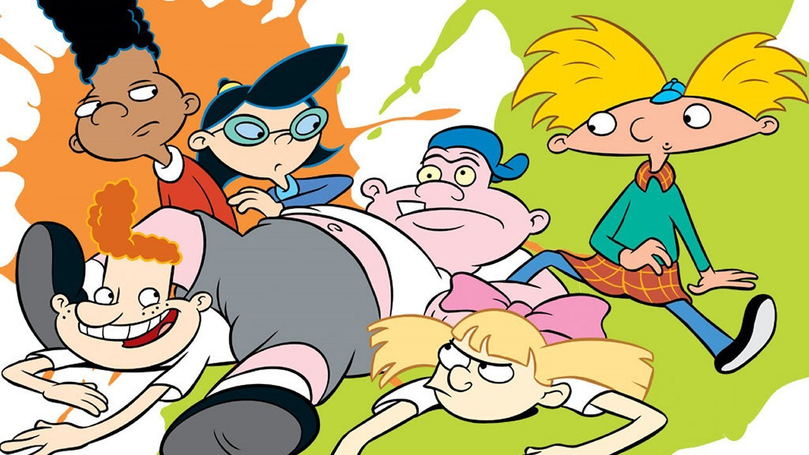
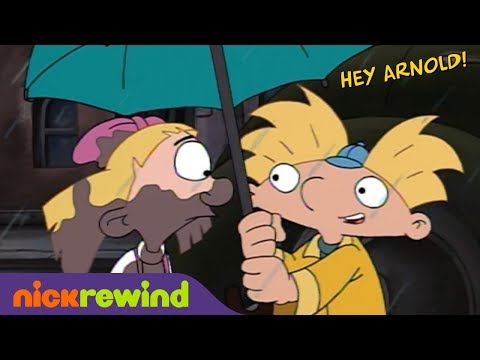
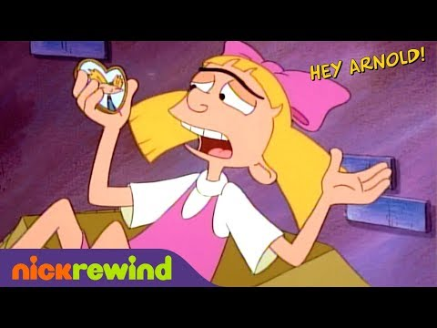

Hey Arnold!




Details
My notes
Hey Arnold!
About
Hey Arnold! follows a boy with a distinctive wide head as he navigates school, friendships, and his city neighbourhood. Gerald is his best friend; Helga is one of his most memorable classmates. The stories combine everyday childhood problems with the lives of the people around him.
Craig Bartlett created the Nickelodeon series. This page records the show named from memory; it does not assume a particular episode, film, channel watched, language, or viewing year.
Things to recognise
- Arnold’s tiny blue cap, yellow hair, and wide head.
- Gerald’s tall hairstyle.
- Helga’s pink bow and the school-and-neighbourhood setting.